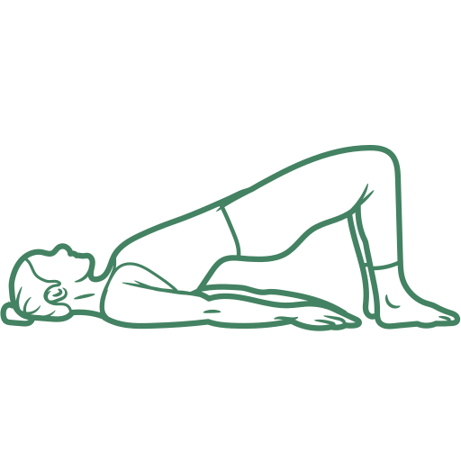

What this helps: strengthens the muscles that support your lower back and hips.
Steps
- 1Lie on your back with your knees bent and feet flat on the floor.
- 2Gently tighten your stomach muscles.
- 3Slowly lift your hips until your body makes a straight line.
- 4Hold, then lower back down slowly.
Hold for 15 seconds
15
seconds